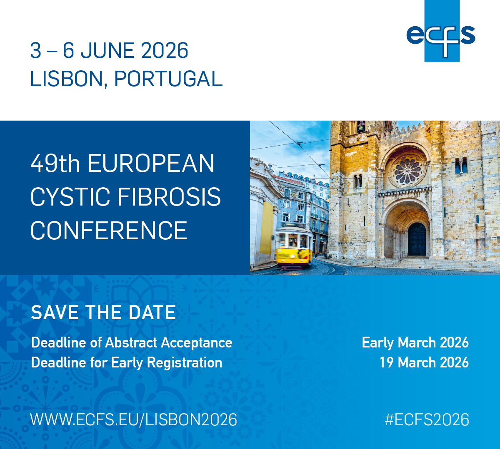

ECFS 2026 presentations, posters, and abstracts
A static, browser-searchable view of 818 programme contribution records for the 49th European Cystic Fibrosis Conference in Lisbon. The archive preserves programme metadata, session context, abstract sections, parse status, and source URLs for verification.

Records
818
Unique abstracts
689
Structured
574
Source URLs
818
Browse records
Search title, abstract text, author, presenter, code, session, track, room, and programme role. Results update locally in the browser.